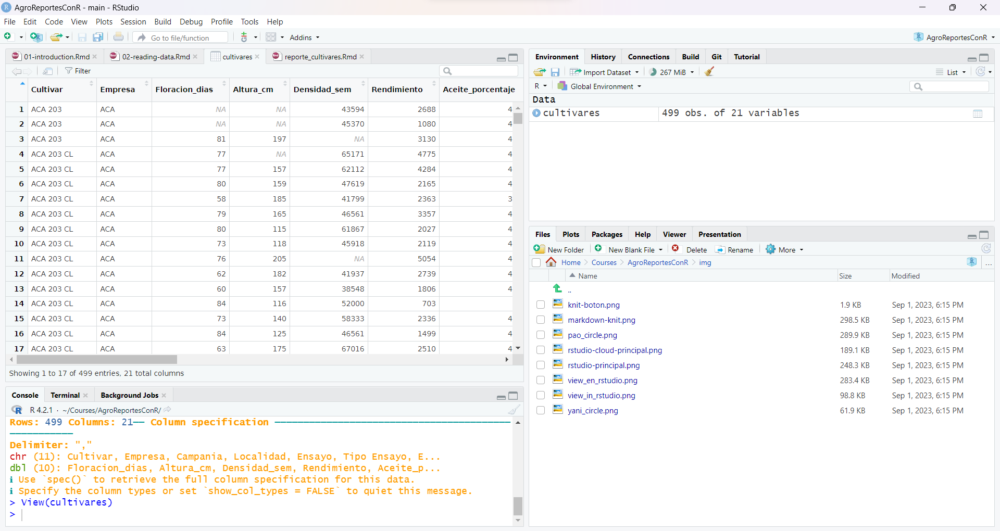

El conjuto de datos contiene 499 observaciones con 21 variables. Estas son las variables que se registran durante los ensayos y que caracterizan el cultivar, por ejemplo rendimiento, porcentaje de aceite, días a floración y altura. También contiene detalles sobre los ensayos, como la fecha, el tipo de siembra, la localidad donde se realizó y la época de siembra.
Como queremos aprender a leer datos en R, vamos a leerlos desde archivos csv y xlsx.
Empezaremos cargando el paquete tidyverse, que nos
da acceso a docenas de paquetes y funciones con las que trabajar. Por
ahora usaremos la función read_csv() para leer un archivo
.csv que está almacenado en el directorio de datos.
## ── Attaching core tidyverse packages ────── tidyverse 2.0.0 ──
## ✔ dplyr 1.1.4 ✔ readr 2.1.5
## ✔ forcats 1.0.0 ✔ stringr 1.5.1
## ✔ ggplot2 3.5.1 ✔ tibble 3.2.1
## ✔ lubridate 1.9.3 ✔ tidyr 1.3.1
## ✔ purrr 1.0.2
## ── Conflicts ──────────────────────── tidyverse_conflicts() ──
## ✖ dplyr::filter() masks stats::filter()
## ✖ dplyr::lag() masks stats::lag()
## ℹ Use the conflicted package (<http://conflicted.r-lib.org/>) to force all conflicts to become errors## Rows: 499 Columns: 21
## ── Column specification ──────────────────────────────────────
## Delimiter: ","
## chr (11): Cultivar, Empresa, Campania, Localidad, Ensayo, Tipo Ensayo, Epoca...
## dbl (10): Floracion_dias, Altura_cm, Densidad_sem, Rendimiento, Aceite_porce...
##
## ℹ Use `spec()` to retrieve the full column specification for this data.
## ℹ Specify the column types or set `show_col_types = FALSE` to quiet this message.En Excel o Google Sheets, los datos se almacenan en la hoja de
cálculo y se organizan en celdas. En R, se almacenan en objetos. Cuando
leemos un archivo csv, los datos van directo a un data.frame llamado
cultivares y están listos para ser utilizados. En la solapa
“Environment” podemos ver el objeto cultivares, y si
hacemos clic en ese objeto los datos se abrirán en una nueva pestaña
para que veamos que pinta tiene.

Esta previsualización es lo más parecida a la que tenemos en una hoja
de cálculo. Podemos llegar a este panel ejecutando
view(cultivares) en la consola. Hay otras funciones que nos
sirven para visualizar nuestros datos. Vamos a utilizar una de
ellas:
## Rows: 499
## Columns: 21
## $ Cultivar <chr> "ACA 203", "ACA 203", "ACA 203", "ACA 203 CL", "A…
## $ Empresa <chr> "ACA", "ACA", "ACA", "ACA", "ACA", "ACA", "ACA", …
## $ Floracion_dias <dbl> NA, NA, 81, 77, 77, 80, 58, 79, 80, 73, 76, 62, 6…
## $ Altura_cm <dbl> NA, NA, 197, NA, 157, 159, 185, 165, 115, 118, 20…
## $ Densidad_sem <dbl> 43594, 45370, NA, 65171, 62112, 47619, 41799, 465…
## $ Rendimiento <dbl> 2688, 1080, 3130, 4775, 4284, 2165, 2363, 3357, 2…
## $ Aceite_porcentaje <dbl> 43.89, 43.16, 40.89, 45.80, 47.83, 45.16, 36.46, …
## $ Rendimiento_Ajustado <dbl> 2739, 1093, 3095, 4956, 4534, 2233, 2232, 3314, 2…
## $ Campania <chr> "2010-2011", "2010-2011", "2011-2012", "2007-2008…
## $ Localidad <chr> "General Pico", "Villa Mirasol", "Reconquista", "…
## $ Latitud <dbl> -35.66669, -36.10005, -29.14952, -36.51676, -37.8…
## $ Longitud <dbl> -63.75005, -63.88339, -59.66646, -64.01673, -58.2…
## $ Ensayo <chr> "General Pico 2010-2011", "Villa Mirasol 2010-2…
## $ `Tipo Ensayo` <chr> "Convencional", "Convencional", "Convencional", "…
## $ Epoca <chr> "Normal", "Normal", "Normal", "Normal", "Normal",…
## $ Distancia_surcos <dbl> 70, NA, NA, 70, 70, 70, 70, 70, 70, 70, 70, 70, 7…
## $ Tipo_Siembra <chr> "Directa", NA, NA, "Convencional", "Directa", "Co…
## $ Densidad_siembra <dbl> 43000, NA, NA, 62000, 59000, 45000, 44000, 46000,…
## $ Fecha_Siembra <chr> NA, NA, "07/09/2011", "25/102007", "30/10/2007", …
## $ Testigo <chr> "NO", "NO", "SI", "NO", "NO", "NO", "NO", "NO", "…
## $ Visible <chr> "SI", "SI", "NO", "SI", "SI", "SI", "SI", "SI", "…Esta salida es diferente y nos da información sobre el tipo de datos en cada columna (o variable).
A veces nuestros datos no son tan amigables y necesitamos dar más información a la función para poder leer los datos correctamente. Puedes encontrar estas opciones buscando en la documentación de la función.
Escribe
?read_csv()en la consola y revisa la documentación. ¿Cómo se llama la opción para cambiar el delimitador por defecto?
¿Cómo podemos trabajar con archivos xlsx? Necesitaremos otro paquete
de R, readxl que ya está instalado en el proyecto
RStudio Cloud, solo necesitamos cargar la librería. En este caso la
función se llama read_excel().
Y listo, hemos leído un archivo xlsx. Por supuesto, a veces tenemos
que trabajar con archivos con múltiples hojas o con datos que no están
muy organizados. Esta función viene con varias opciones o argumentos
para leer hojas específicas
(sheet = <nombre de la hoja>) o un rango específico
(range = "C1:E7") y otros.
Ahora que tenemos los datos leídos en R, es el momento de analizar esos datos.